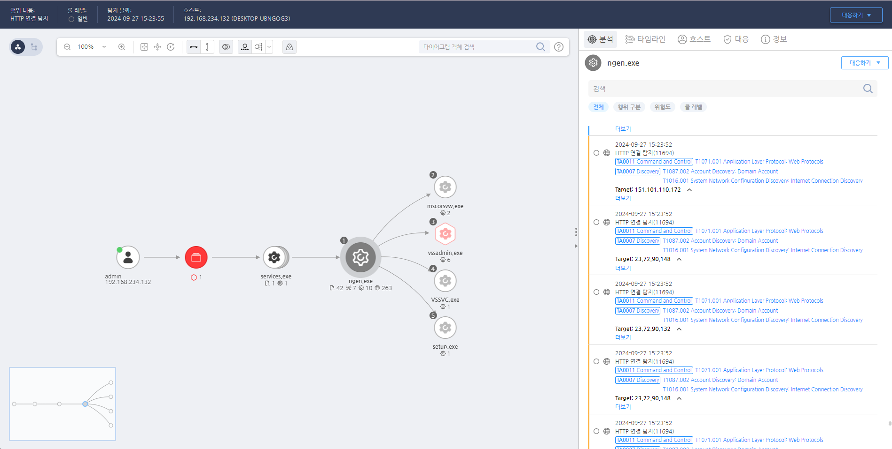

T1071.001.01 애플리케이션 계층 프로토콜: 웹 프로토콜
D3FEND
MITRE ATT&CK 액션을 기준으로 대응 방안을 작성
Detection
80번 포트를 이용해 특정 IP에 연결하는 행위를 탐지한다.
Detection(EDR)

Response
공격자가 웹 프로토콜을 사용하여 명령 및 제어(C2) 서버와 통신하는 경우, 즉시 해당 C2 서버와의 통신을 차단하고, 해당 IP 주소 또는 도메인을 블랙리스트에 추가합니다.
Mitigations
네트워크 트래픽 분석 및 필터링 (M1032 - Network Traffic Filtering)
- 웹 트래픽을 포함한 네트워크 트래픽을 심층 분석하여 HTTP/HTTPS 요청을 모니터링하고 비정상적인 요청 패턴을 탐지
- 웹 애플리케이션 방화벽(WAF)을 활용하여 HTTP/HTTPS 요청을 필터링하고 비정상적인 트래픽이나 C2 통신을 차단
- Anomaly Detection 도구를 사용하여 웹 프로토콜을 통한 비정상적인 트래픽 패턴을 탐지하고 차단
웹 애플리케이션 보안 강화 (M1042 - Web Application Firewall (WAF))
- 웹 애플리케이션 방화벽(WAF)을 설치하여 HTTP/HTTPS 기반의 악성 요청을 차단하고, 명령어 삽입이나 비정상적인 패턴을 탐지
- HTTPS 트래픽 검사를 활성화하여 SSL/TLS 암호화된 웹 프로토콜에서도 C2 통신을 감지할 수 있도록 설정
- 기존 웹 애플리케이션의 보안 점검을 주기적으로 실시하여 웹 서비스 취약점을 사전에 해결
출발지 IP 주소 및 도메인 필터링 (M1030 - Domain Filtering)
- 명령 및 제어 서버와의 연결을 차단하기 위해 의심스러운 IP 주소나 도메인을 차단
- 출발지 IP 주소 또는 도메인 이름에 대한 DNS 필터링을 설정하여 웹 기반 C2 서버와의 통신을 차단
- DNS 로그를 분석하여 의심스러운 도메인 요청을 탐지하고 네트워크를 통한 C2 트래픽을 차단
SSL/TLS 인프라 모니터링 및 강제 종료 (M1012 - Network Encryption)
- SSL/TLS 트래픽을 모니터링하고, HTTPS로 암호화된 트래픽도 인증서 검증 및 무결성 검사를 수행하여 비정상적인 암호화된 C2 트래픽을 탐지
- 중간자 공격 방지를 위해 SSL/TLS 검증을 강화하고, HTTPS 세션 종료 시 비정상적인 연결 종료를 검토
- SSL/TLS 세션 검사를 강화하여 네트워크 암호화 트래픽 내에서 발생하는 악성 명령 및 제어 활동을 식별
네트워크 세분화 및 내부 네트워크 방어 강화 (M1037 - Network Segmentation)
- 내부 네트워크와 외부 네트워크를 세분화하여 내부 시스템이 외부와 직접 연결되지 않도록 방지
- 내부 네트워크 방어를 강화하고, 외부와의 네트워크 통신을 엄격히 제한하여 웹 프로토콜을 통한 C2 통신 경로를 차단
- VLAN을 사용하여 내부 네트워크에서 공용 네트워크로의 불필요한 트래픽 흐름을 차단
HTTP/HTTPS 요청 필터링 및 패턴 분석 (M1040 - Behavior-Based Detection)
- HTTP/HTTPS 요청 패턴을 분석하여 비정상적인 요청을 실시간으로 탐지
- 행위 기반 탐지 시스템을 사용하여 웹 트래픽의 비정상적인 동작을 감지하고, C2 트래픽으로 의심되는 활동을 식별
- 웹 프로토콜 요청을 필터링하고, 정상적인 웹 요청과 악성 C2 요청을 구분하는 규칙을 설정
보안 정책 및 웹 사용 규정 설정 (M1019 - Awareness and Training)
- 웹 프로토콜 사용에 대한 보안 규정을 설정하여 불필요한 웹 통신을 차단하고 웹 기반 C2 통신을 방지
- 직원 교육을 통해 웹 애플리케이션 및 브라우저 보안에 대한 인식을 높이고, 웹 프로토콜을 통한 공격 시나리오에 대한 대응 능력을 향상
- 보안 인식 교육을 통해 웹 기반 공격과 관련된 C2 활동에 대해 직원들이 알 수 있도록 돕기
침해 탐지 시스템(IDS/IPS) 사용 (M1047 - System Logging & Monitoring)
- 침해 탐지 시스템(IDS/IPS)을 활용하여 HTTP/HTTPS 트래픽을 모니터링하고, C2 서버와의 의심스러운 연결을 감지
- HTTPS 트래픽에서 발생하는 비정상적인 행위를 식별하고, 의심스러운 요청을 차단하는 설정을 적용
- SSL 인증서 검사를 활성화하여 암호화된 트래픽 내에서의 비정상적인 C2 요청을 탐지
Affected Techniques
Action 실행시 함꼐 영향을 받는 다른 Techniqes
| D3FEND |
| D3-NTF Network Traffic Filtering |
| D3-ITF Inbound Traffic Filtering |
| D3-OTF Outbound Traffic Filtering |